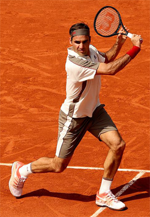
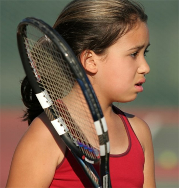
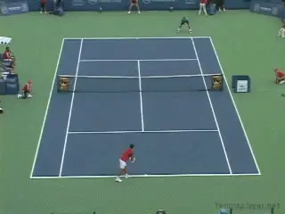

Flowing in the Zone¶
Ben Loeb¶

Tom Brady seems to live in a state of flow.
You perform in the zone when you are performing at your best and it seems to come without great or deliberate effort. Another name for the zone is flow state.
One great example isTom Brady, the New England Patriots' great quarterback, who appears to always be in a flow state. His progressions in looking for the open receiver seem to happen automatically.
It seems similar for Roger Federer, arguably the best tennis player ever. Roger trusts his rhythm and timing, playing instinctually seemingly without much conscious thought. As he has gotten older, he has maintained his high level of play without much \"effort.\"
The idea of \"flow\" or being \"in the zone\" is associated with what Jim Loehr first called the ideal performance state. (link.) It's a state of effortless effort and complete focus.
Here are some characteristics of being in the zone or being in a state of flow.
Being totally absorbed in the moment. Being fully emotionally engaged. Feeling confident in your ability to respond to challenging situations. A sense of freedom, joy, and fun, of almost welcoming obstacles.
If a player experiences these, he stands a good chance of reaching his ideal performance state on a regular basis.

Roger Federer: still effortless after all these years.
Allow Yourself
Getting into the zone is easier described than achieved. Getting there means allowing yourself to get there, rather than trying to get there. But let's outline some of the many processes that can help you let the zone happen.
[[First, develop a regular pregame warm up. It should be dynamic and include movement. Movement energizes you and gets you physically ready to compete. (For a classic example of a warm up routine developed by Pat Etcheberry] link[.)]]
Second, try to relax mentally. Try to put all your concerns, worries, and stressors from the rest of your life aside in a figurative box. Let your mind go quiet, so instinct can take over. Get out of your own way by not overthinking.
The third step is to relax physically. Before and during the match, tune into your muscle tension level. Your muscles should be loose and flexible without tension beyond what is needed to perform.
Letting yourself relax is different from trying to relax. You can use stretching and body movements to help relax between points and on game changes.
The fourth step is to allow your joy, passion, and enthusiasm for tennis show through your body language. These steps are investments in yourself that can help lead you into the zone.

Many or even most players wrestle with negative thinking.
Enemies
What are the enemies of flow? A preoccupation with winning. The desire to impress others. Making excessive, conscious efforts to achieve a flow state. Lack of confidence. (link to read my article on Techniques for Developing Confidence.) All of these enemies take you out of the moment.
Thinking
Too much thinking causes confusion and takes you away from a zone experience. How often do you wrestle with telling yourself to stop negative thinking and replace it with positive thinking, yet your feelings don't comply?
In his book The Path of No Resistance, Garret Kramer states, \"Only when your mind is free from the burden of trying to find mental clarity does it leave space for insights and excellence to come pouring in.\"
According to Kramer there are two types of thinking. These are outside-in thinking and inside-out thinking. Outside-in thinking occurs when circumstances dictate your thoughts, in tum making your feelings beyond your control. Inside-out thinking is when you chose what thoughts to believe and act on and let your feelings follow these thoughts.
We all have random and uncontrollable thoughts every day. They can't be stopped by some act of will. But we can choose which thoughts we believe and act on.

Focusing on negative thoughts leads to negative feelings.
The thoughts we believe or act on affect our feelings. The thoughts we give attention to and the feelings they elicit affect our ability to get into the zone.
Our feelings are not something we can always turn on or off on command. But each human being has an innate ability to self-correct. You don't have to try to correct your counterproductive feelings to get into the zone. You can trust your inner self to clear them out naturally, by letting your feelings follow positive thoughts.
Mental Imagery
Another powerful tool is mental imagery. Mental imagery, also referred to as \"visualization\" and \"mental rehearsal,\" can be very useful in improving performance of any kind. In your visualizations, you can create your own motion picture with you as the star performer.
Mental imagery trains your mind by creating neural patterns in your brain. These patterns actually help create muscle memory of the physical skill you are imagining yourself performing. Simultaneously mental imagery allows you to rehearse how you handle challenging situations.
Baseball players may use mental imagery just before pitching or batting. A quarterback may use imagery to review his progressions while on the sideline before taking the field.

Hitters can visualize before swinging.
A tennis player can use imagery to see the desired flight of the ball before they serve. These rehearsed images create brain patterns or images that, if you trust and allow them to take over, are likely to improve your performance. You will have trained your mind and body to perform automatically without conscious interference, leading to better performance.
These are some of the other ways to use visualization: To make technique more automatic. To improve positive thinking. To build more confidence. To reduce performance anxiety. To regulate energy. To manage mistakes. To overcome a subpar past performance. To separate self-worth from performance. (To read a seminal article on the use of mental imagery by Jim Loehr link.)
If Then
Another way to practice pressure situations off the court is to create an \"If-Then Statement.\" This type of statement asks you to come up with a situation that has caused you problems such as getting upset after a bad play or point. Then come up with what you will do when that happens next, for example, taking a deep breath to clear out the negative energy.

Visualize the path of the shot before striking the ball.
List two barriers to your performance. List either two emotional barriers or one emotional barrier and one physical barrier, for example technique on the serve. These are the If statements. Then write possible solutions for each one. These are the Then statements. You can then visualize yourself overcoming these barriers.
Positive Attitude toward Pressure
Athletes spend relatively little time practicing under pressure. Part of this is because it's hard to simulate genuine pressure situations in practice. But there are things you can do to gain simulated experience dealing with pressure.
Develop the attitude that pressure situations are a great opportunity. As Billie Jean King puts it, pressure is a privilege. The best way to create psychological pressure situations is to keep score in some way.
So, create pressure situations in practice to try to simulate what you will face on match day. This way, you will be better prepared mentally and emotionally to handle the real conditions.

Can you develop a positive attitude toward pressure?
Some great examples are the type of drill games in Jorge Capestany's series on Tennisplayer (link.) You can also set up actual on court scenarios based on your If Then statements.
Examples in other sports are the two-minute drill in football, batting with two on base and two out late in the game in baseball, or a corner kick in soccer with a minute to go in the game.
In tennis hitting a second serve on a simulated break point. Or whatever situations you feel most challenged by.
Simulating these scenarios will allow you to become better prepared to handle pressure situations on match day. It will also give you an opportunity to develop a positive attitude toward pressure situations by working on them systematically in practice.
Follow some or all of the suggestions above and see if they don't help you get into the zone more often and more naturally.

Ben Loeb has been the varsity tennis coach for the boys' and girls' teams at Rock Bridge High School in Columbia, Missouri for over 30 years. His teams have won more than 1000 dual matches, made 38 appearances in the final four of the state team championships, and won 17 state titles. Been also teaches a high school sports psychology class and has used the principles he has developed to help hundreds of players to overcome the mental and emotional challenges of playing winning competitive tennis.

Next-Level Coaching!
Ben's new book, Next-Level Coaching, outlines the principles he has developed over his career as a player and a championship coach to help overcome the mental and emotional challenges of playing and enjoying competitive tennis. It includes detailed self-assessment questionnaires and plans of action to help any player our coach use sports psychology to reach the next level.
To Order Next-Level Coaching, !